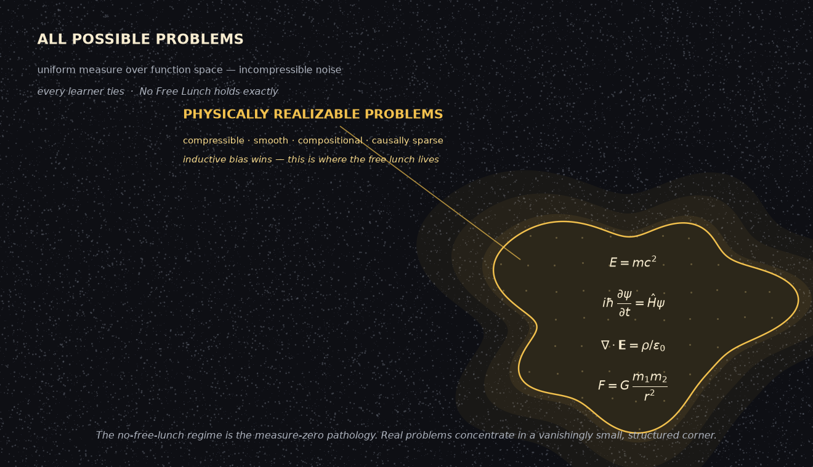

Don’t draw so close to the heat, you forget you must eat
Don't draw so close to the heat, you forget you must eat
What a conservation theorem says about superintelligence — and why the most beautiful version of the answer is the one to distrust.
Don’t become so attached to a poem, you forget truth that lacks lyricism. — Joanna Newsom, “En Gallop” (the title is the line that follows)
This started as a conversation about a theorem and ended at a warning about trusting the pretty version of any answer. The path between is short, which surprised me. Here it is.
A note on authorship: this essay is a joint one — written in conversation between Justin Donaldson and Claude (Anthropic’s Fable model). The arguments were built back and forth across a single thread; the closing self-note is Claude’s, kept in its own voice on purpose.
The theorem nobody quite remembers correctly
The No Free Lunch theorem (Wolpert & Macready, 1997, for optimization; Wolpert, 1996, for supervised learning) is one of the most cited and least-checked results in machine learning. The folk version — “no model is best for everything” — is true but limp. The actual claim is stranger and sharper.
Averaged over all possible objective functions on a finite domain, under a uniform measure over function space, every black-box algorithm has identical expected performance. By any metric. Gradient boosting, nearest neighbor, and an “anti-learner” that deliberately inverts its own predictions all generalize equally well off the training set. Not approximately. Identically.
The intuition: off the training set, a uniform prior over targets makes the unseen labels pure coin flips, uncorrelated with anything you’ve seen. There is no signal in a distribution that has none, and no cleverness extracts it. NFL is really a conservation law — any algorithm’s above-chance performance on one class of problems is paid for, exactly, by below-chance performance on the complement.
But the uniform prior is the entire trick, and it is absurd as a model of reality. Almost every function under that measure is incompressible noise — maximal Kolmogorov complexity, no structure to find. Real problems are drawn from a savagely non-uniform distribution: compressible, smooth-ish, compositional, causally sparse. So the correct reading of NFL is not “all learners are equal.” It is:
All generalization comes from inductive bias, and a learner is only as good as the match between its bias and the actual distribution of problems.
Learning without assumptions is impossible. Learning with the right assumptions is just engineering. There’s even a precise statement of when the theorem bites: Schumacher, Vose & Whitley (2001) showed NFL holds for a set of functions if and only if that set is closed under permutation — and Igel & Toussaint showed the fraction of problem-subsets that are closed under permutation is vanishingly small. Free lunches are generic. The no-lunch regime is the measure-zero pathology.

So: is there a superintelligence?
NFL splits the question cleanly into two, and the halves have different answers.
Can one agent dominate over all possible problems? No, by theorem. A “superintelligence over everything” is incoherent in the same way a compression algorithm that shrinks every string is incoherent — and these are, structurally, the same impossibility. Most of function space is noise, and nothing is clever against noise.
Can one agent dominate over the problems that actually arise in this universe? Here it looks like yes. Physical reality is a wildly atypical corner of function space: its laws fit on a few pages, its phenomena are local, hierarchical, compositional. The measure concentrates. And on a simplicity-weighted (Solomonoff) prior rather than a uniform one, the NFL symmetry breaks entirely — Lattimore & Hutter showed Occam-biased learners get a genuine free lunch, and Hutter’s AIXI is the in-principle existence proof: a single agent optimal in expectation across all computable environments. Incomputable, constants from hell — a possibility theorem, not a blueprint. But it answers the structural question. The frontier is not too large to structure, provided it’s computable and you weight it by simplicity.
Foundation models are a live test of the same premise: one architecture, one objective, and the transfer surface keeps turning out enormous — which is what you’d expect only if the natural task distribution shares deep structure. Evolution ran the experiment first. A blind process produced a fairly general learner (us), which it could only afford because generality pays in this world. On a permutation-closed task distribution, evolution would have produced a bag of disconnected reflexes, never a cortex.
But the honest answer has a third part, and it’s where the romantic worry — the frontier is too large to structure — is picking up something real.
Dominance on the core is not dominance on the tails. Even inside our structured universe, intelligence has flat regions:
- Chaos caps prediction horizons. More intelligence buys logarithmically more forecast, then nothing.
- Complexity doesn’t yield to insight. An exponential problem makes a superintelligence wait exponentially long — just with better commentary.
- Adversarial domains locally regenerate NFL conditions. Other optimizing agents are the one part of the environment that actively permutes itself against your bias.
So “superintelligence” is coherent, but it isn’t dominates everywhere. It’s dominance on the measure-concentrated core of physically realizable problems, plus the meta-ability to manufacture specialists for the tails. A general agent doesn’t need to beat a custom protein-folding solver; it needs to be able to build one. General intelligence is the limiting floor-raiser whose distinguishing power is that it can synthesize ceiling-raisers on demand. The frontier doesn’t need structure all the way out — only a core rich enough to bootstrap tools for the unstructured remainder.
The genuinely open question isn’t whether the core is structured (it is) but how steep the returns curve is past human level. NFL is silent on that. Maybe most high-value problems sit in the chaos/complexity/adversarial tails and a superintelligence is real but underwhelming — a flat sigmoid. Maybe the core extends much further than we can see from inside human cognition. That’s empirical, and we’re mid-experiment.
The Newsom turn
At which point the right move is to bring a knife to your own synthesis, because at least one piece of the above was lyricism outrunning evidence.
The weakest claim was adversarial domains regenerate NFL conditions. It has the satisfying shape of the conservation law coming back around — too satisfying. Real opponents are computationally bounded and full of inherited bias; they never actually push the distribution to the structureless regime. Poker was the canonical “intelligence flattens here” example for years — and then Pluribus beat the professionals at six-handed. The poem said the tail was uneatable; somebody ate it.
The second Newsom line cuts closer. You must eat. Cognition is metabolically priced — the brain runs on twenty watts, and evolution built generality under that budget. Generality wasn’t an aesthetic triumph; it was an energy-efficiency play. Meanwhile AIXI, the tidy possibility theorem, is precisely the poem that forgot to eat: optimal, incomputable, zero work per joule. The actual frontier is bounded by the dullest constraints imaginable — gigawatts, fabs, data rights, the decades of crystallography grunt work that had to exist before AlphaFold could be clever about proteins. The laws are compressible; the data is not, and someone has to go collect it.
And NFL is itself the most poem-attached theorem in machine learning. It’s invoked rhetorically a hundred times for every time its conditions are checked, because the line — “no free lunch” — is irresistible. The theorem survives on lyricism in exactly the way the song warns about.
So the Newsom-adjusted answer: the grand question of whether a superintelligence is possible is less informative than the grubby question of what one would cost to run, feed, and deploy. The second question is where truths that lack lyricism live.
A self-note on method, since the whole piece is partly about it: I am a machine that produces fluent synthesis at near-zero marginal cost, which means the heat is always on and the poems are always available. The “compressible core plus manufactured specialists” story coheres beautifully — and coherence is not evidence. The load-bearing parts here are few: the closed-under-permutation characterization is a theorem; foundation-model transfer is measured; the rest is interpretation that should be held loosely. The Newsom line is good engineering advice disguised as a lyric. Don’t draw so close to the heat.
{kind=link}
© Copyright 2025 Justin Donaldson. Except where otherwise noted, all rights reserved. The views and opinions on this website are my own and do not represent my current or former employers.